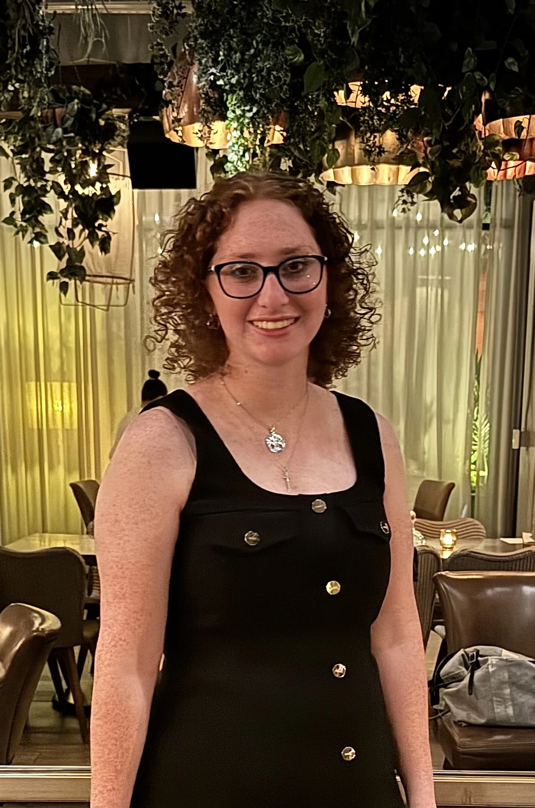

Themed entertainment · USC ’29
Stories, made
into places.
I’m Jenna, a themed entertainment student exploring how imagination becomes an experience you can step into.

Themed design✦Spatial storytelling✦3D modeling✦Making by hand
Selected work
Ideas with a world
of their own.


The person behind the projects
Curious about stories.
Hands-on with ideas.
I’m a sophomore in the Themed Entertainment Program at the University of Southern California. My work moves between immersive concepts, digital worlds, and physical forms.
University of Southern California · Class of 2029Meet Jenna